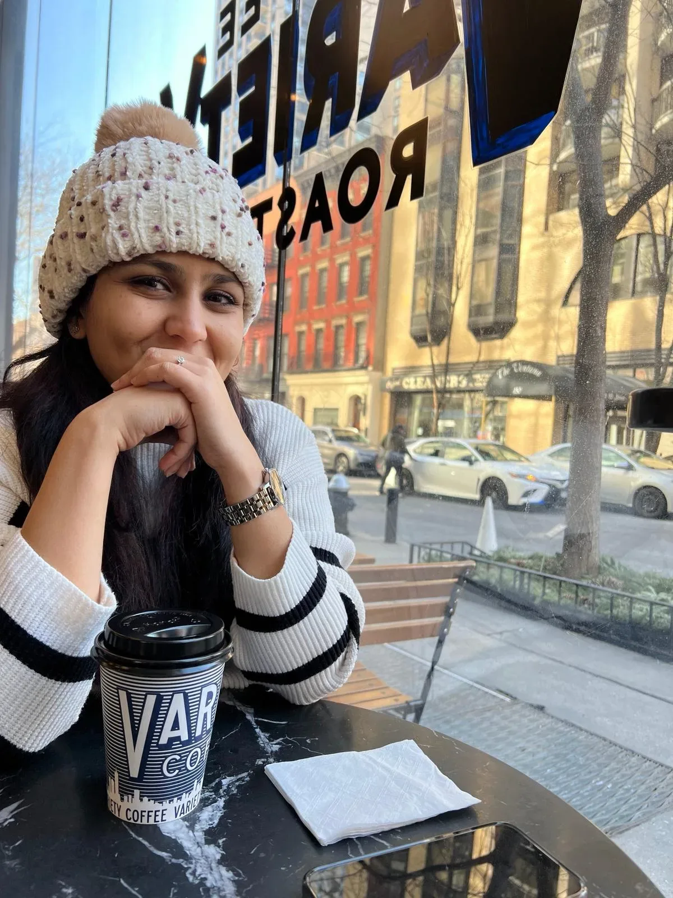

Curious by nature, user-centric by practice.
I'm a Senior UX Researcher with a foundation in Psychology and Human-Computer Interaction, currently leading user research for enterprise and B2B software as a Sr. UXR at ServiceNow.
That foundation was laid by a Postgraduate Certificate in Business Psychology (Human Factors emphasis) from the University of Manchester and an M.S. in Human Factors/Ergonomics from San José State University, the through-line since has been the same question at every scale: what does this person actually need to trust the system in front of them?
I thrive in cross-functional teams, and I'm equally at home in the qualitative and the quantitative, every research decision, and the design solutions that follow it, stays user-centric.
I'd describe myself as highly curious and focused on learning in every part of life. Professionally, I look for the hardest problems, the ones with the most to learn from and I invest fully: finding who I can learn from, and optimizing every step of the process. Living in three countries and traveling to 20+ more has done the same for the rest of my life, shaping a worldview that makes me more empathetic to a wide, diverse range of people.